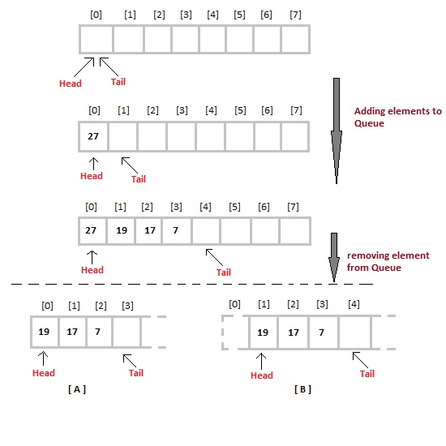

Introduction to Queues
A queue is a linear data structure that follows the First In First Out (FIFO) principle, where the element inserted first is the one to be removed first. It is similar to waiting in a line at a ticket counter or a queue of vehicles at a toll booth.A Queue Data Structure is a fundamental concept in computer science used for storing and managing data in a specific order.Queues are commonly used in various algorithms and applications for their simplicity and efficiency in managing data flow.
What Are Queues?

In computer science, a queue is a collection of entities that are maintained in a sequence and can be modified by the addition of entities at one end of the sequence and the removal of entities from the other end of the sequence. The primary operations on a queue are enqueue (adding an element to the rear) and dequeue (removing an element from the front).
- First In First Out (FIFO): The element that is added first to the queue will be the first one to be removed.
- Operations: Queues typically support operations such as enqueue (insertion), dequeue (removal), peek (retrieve the front element without removing it), and isEmpty (check if the queue is empty).
- Real-world Analogy: Queues can be likened to real-world scenarios such as waiting lines at a ticket counter, ordering food at a restaurant, or processing tasks in a computer system.
Basic Operations on Queues
Enqueue:
Adds an item to the rear end of the queue.
Algorithm for enqueue:
1. Check if the queue is full.
2. If the queue is full, display an overflow error.
3. If the queue is not full, increment the rear pointer and add the item to the rear position of the queue.
Dequeue:
Removes an item from the front end of the queue.
Algorithm for dequeue:
1. Check if the queue is empty.
2. If the queue is empty, display an underflow error.
3. If the queue is not empty, remove the item from the front position of the queue and increment the front pointer.
Peek:
Retrieves the front element of the queue without removing it.
Algorithm for peek:
1. Check if the queue is empty.
2. If the queue is empty, display an underflow error.
3. If the queue is not empty, return the element at the front position of the queue.
isEmpty:
Checks if the queue is empty.
Algorithm for isEmpty:
1. If the front pointer is equal to the rear pointer, the queue is empty.
2. Otherwise, the queue is not empty.
Implementation of Queue Data Structure
Queue can be implemented using an Array, Stack, or Linked List. The easiest way of implementing a queue is by using an Array.
Initially, the head (FRONT) and the tail (REAR) of the queue points at the first index of the array (starting the index of the array from 0). As we add elements to the queue, the tail keeps on moving ahead, always pointing to the position where the next element will be inserted, while the head remains at the first index.

Approaches to Remove Elements from Queue
When we remove an element from the Queue, we can follow two possible approaches:
- Approach [A]: Remove the element at the head position and then shift all the other elements one position forward.
- Approach [B]: Remove the element from the head position and then move the head to the next position.
In approach [A], there is an overhead of shifting the elements one position forward every time we remove the first element. In approach [B], there is no such overhead, but whenever we move the head one position ahead after the removal of the first element, the size of the Queue is reduced by one space each time.